Overview
Administrators configure Identity Guardian and set up profiles for shared or personally assigned devices through Managed Configurations.
Each user is required to complete a one-time enrollment process before authentication and sign in. For users opting to use facial biometrics (if configured by the administrator), customizable Terms and Conditions must be reviewed and accepted. Once enrollment is complete, users can sign in and out of the device as needed.
The enrollment workflow can be further streamlined using the Identity Guardian zCreator companion app, offering:
- Barcode printing and sharing: Effortlessly print, preview, and resize barcodes. This is seamlessly integrated with the enrollment process, supporting both Zebra and Canon printers, and also allows barcodes to be shared.
- NFC card writing: Write user data to NFC cards when NFC data is saved during enrollment.
This section also discusses additional features available to streamline the authentication process.
User Enrollment
The user enrollment procedure varies depending on the device access method:
- Shared Device
- Personally Assigned Device
Shared Device
To sign in or authenticate on a shared device, users must first complete enrollment with Identity Guardian. There are two methods for enrolling users on shared devices:
- Standard Enrollment - Users enroll on a designated device using the Enrollment profile set up by their administrator. Afterward, they can authenticate on the shared device where the Authentication profile has been deployed.
- Self-Enrollment - Both enrollment and authentication are performed directly on the shared device, facilitated by the Authentication profile deployed by the administrator.
Once enrollment is complete, the user are provided the option to print or share the barcode if the zCreator app is installed. This app is mandatory for Self-Enrollment but optional for Standard Enrollment, since Standard Enrollment inherently includes the ability to save barcodes.
Standard Enrollment
After administrators deploy specific settings through a standard enrollment profile to a device designated for user enrollment, follow these steps to enroll users (steps may vary depending on the options configured):
In Identity Guardian, tap Start.

(Optional) This is a 6 digit PIN set by the administrator. Tap Continue.

Setup ID and passcode:
- Enter ID or email (Maximum of 60 characters. Note: This is case-sensitive — the string entered must exactly match that from the identity provider. Discrepancies may lead to authentication issues or failure if using the Auto-Fill SSO Login feature.)
- (Optional) Select the appropriate user role (options vary based on your administrator setup).
- (Optional) Enter the expiration date for the barcode. This applies for temporary users.
- Create a passcode based on the requirements set by the administrator.
- Re-enter the passcode

(Optional) Capture facial biometrics. If opting out (as determined by the administrator's configuration), tap Skip and proceed to step 7 below. Otherwise, tap Add and follow the subsequent steps.

Read the Terms & Conditions. Tap Confirm to accept.

Position your face within the device screen for the photo capture. Capture 1 to 3 facial photos that may vary based on the individual's look, for example, with eyeglasses, hat, etc. Confirm the photo capture(s). Tap Add to capture additional photos. Tap Next when done.
Choose one of the following steps based on your administrator's data storage configuration:
- NFC: Select one of the following:
- Save: Saves the NFC data to the device for 24 hours. Within this timefraame, the user must use zCreator to write their data to an NFC card. Do not proceed to the next step. For NFC, the process is complete at this stage.
- Write to NFC: To write the data to an NFC card, tap Write to NFC. When prompted to write to the NFC card through zCreator, touch the NFC card to the device until the write is complete. Once the write is complete and Identity Guardian is displayed, tap Continue to finish the enrollment process. Do not proceed to the next step. For NFC, the process is complete at this stage.
Note: This option does not save the NFC data to the device.

- Barcode: The user barcode is generated. Tap Next, then proceed to step 8.

- NFC: Select one of the following:
To complete the enrollment process for barcodes, follow one of the options below based on the configurations set by your administrator:
No Barcode: If barcode printing is not required, tap Save to complete the enrollment process. 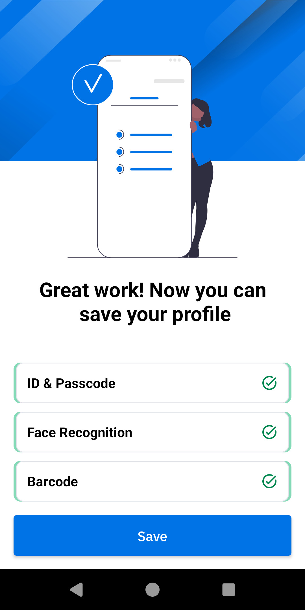
Save the Barcode: If the "Allow opening barcode during enrollment" option in Enrollment Configuration is disabled, barcode printing or sharing is not permitted during enrollment. Tap Save to save the barcode as a PDF file. It is stored in the
/enterprise/usr/profilesfolder on the device and can be accessed later via zCreator. Tap Continue to finalize the enrollment process.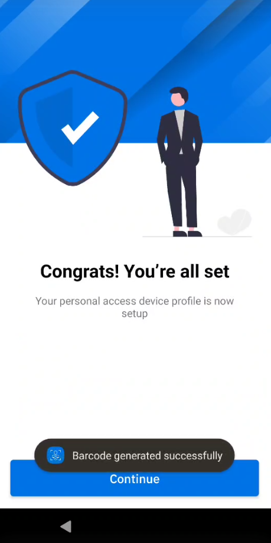 Print or Share the Barcode: If the "Allow opening barcode during enrollment" option in Enrollment Configuration is enabled, both the Print and Share buttons are visible.
Printing or Sharing Barcode: Tap Print to launch the zCreator app, where the barcode displays on the preview screen. For detailed instructions on printing or sharing, see Print & Share Barcode. After printing or sharing, tap the back button in zCreator to return to Identity Guardian, then tap Continue to complete enrollment.
Notes:This option does not save the barcode to the device.
If the user taps the back button in zCreator without printing the barcode, the Identity Guardian screen returns with the Continue button visible. However, the user loses the opportunity to print their barcode, and the previous enrollment steps cannot be revisited.
Saving the Barcode: Tap Save to save the barcode as a PDF file. It is stored in the
/enterprise/usr/profilesfolder on the device and can be accessed later via zCreator.
To retrieve the saved barcode for printing or sharing after enrollment, use the zCreator app. Open zCreator at any time to view, print or share the stored barcode.
After completing enrollment, the user can then sign in to the shared device where the administrator has deployed the authentication profile.
Note: If a user is in the middle of the standard enrollment process and the Admin deploys the Identity Guardian profile for authentication, the user may encounter the lock screen shown below and be unable to sign in. To resolve this, the user should reboot the device.
Self-Enrollment
Users can self-enroll directly from the lock screen on shared devices, allowing for immediate enrollment and authentication on the same device. This streamlines the process by eliminating the need for separate Enrollment and Authentication profiles. Administrators activate this feature through specific settings through a Self-Enrollment Profile deployed to the devices.
Usage
On the lock screen, tap the menu icon in the top right corner and select Enroll User.

Enter the user's SSO login credentials. 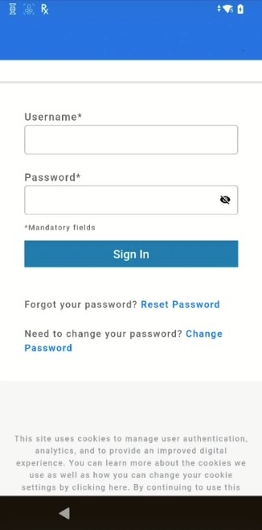
Provide the requested information for enrollment, then tap Next:
- Employee ID or Email - This is populated based on the user ID entered in the SSO login screen. Maximum of 60 characters.
- Role - This is populated based on the user ID entered and their role mapped in their SSO provider.
- Create Passcode - Enter a passcode to create.
- Re-enter Passcode - Enter the same passcode again.
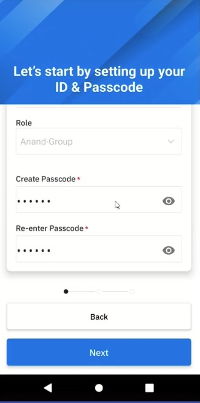
Tap Add.

Tap Confirm to accept the Terms & Conditions, then perform a facial capture. Tap Next. 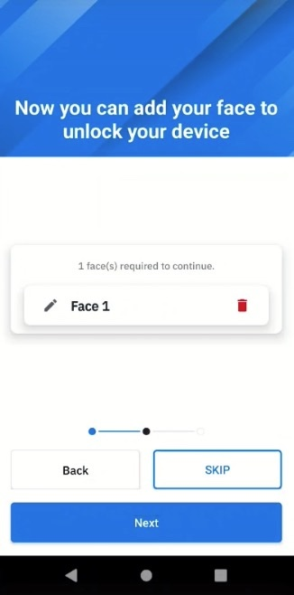
Choose one of the following steps based on your administrator's data storage configuration:
- NFC: Tap one of the following buttons:
- Exit: Exits the enrollment process.
- Write to NFC - Writes the data to an NFC card. When zCreator launches, it prompts the user to touch the NFC card to the device until the write is complete. Once the write is complete and Identity Guardian is displayed, tap Continue to finish the enrollment process. Do not proceed to the next step. For NFC, the process is complete at this stage.
Note: This option does not save the NFC data to the device.
- Barcode: The user barcode is generated. Tap Next, then proceed to step 7. 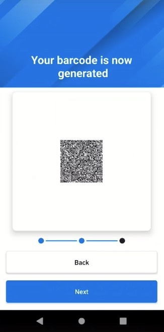
- NFC: Tap one of the following buttons:
Print or Share Barcode: Tap Print. This opens zCreator app in the preview screen to allow for immediate printing or sharing of the barcode. Proceed to the Print & Share Barcode section for the available options.
Note: The barcode is not automatically saved. To save it manually, see Print & Share Barcode.Tap the back button to return to the enrollment screen.
Tap Continue to finalize the enrollment process.
To print or share barcode (if saved), launch the zCreator app at any time.
After completing enrollment, the user can then sign in to the shared device.
Note: To exit self-enrollment in the middle of the process, the user must repeatedly tap the back button until the Identity Guardian lock screen is displayed.
Personally Assigned Device
Before users can sign in or authenticate on a personally assigned device, they must first register with Identity Guardian. Administrators create and deploy the personally assigned profile, then launch Identity Guardian on the device to initiate the enrollment process. The options available to users during the on-device enrollment process may vary based on the Enrollment Configurations set by the administrator.For more details on how to apply the settings, see the EMM Setup section.
After the enrollment process, the user is immediately presented with the authentication screen.
To enroll users on personally assigned devices:
- Open Identity Guardian.
- Tap Start.
- Enter corporate PIN. This is a 6 digit PIN set by the administrator. Tap Continue.
- Setup ID and passcode, then tap Next.
- Enter ID or email
- (Optional) Select the appropriate user role (options vary based on setup by your adminstrator)
- Create a passcode, which can contain up to 6 alphanumeric characters.
- Re-enter the passcode.

- (Optional) Capture facial biometrics. If opting out (as determined by the administrator's configuration), tap Skip and proceed to step 7 below. Otherwise, tap Add and follow the subsequent steps.
- Read the Terms & Conditions. Tap Confirm to accept.
- To add a facial photo, tap Add. Position your face within the device screen for the photo capture. Capture 1 to 3 facial photos that may vary based on the individual's look, for example, with eyeglasses, hat, etc. Confirm the photo capture(s). Tap Add to capture additional photos. Tap Next when done.
- Tap Save to save the profile.

- Tap Continue. The profile creation is complete.

Edit Profile
To edit a profile on a personally assigned device:
- Open Zebra Biometric app.
- Enter your passcode.

- Select the item to edit:
- ID & Passcode
- Face Recognition

- If ID & Passcode is selected, make the appropriate edits and tap Save:
- Role - select the desired role
- Passcode - enter the current passcode and the new passcode

- If Face Recognition is selected, delete the existing facial photo and replace it by capturing a new photo.

Delete Profile
To delete a user profile on a personally assigned device:
- Open Zebra Biometric app.
- Enter your passcode.
- Tap on the menu icon at the top right and select Delete Profile.

After the user profile is deleted, the enrollment screen appears for a user to re-enroll to the device and authenticate the user.
Print & Share Barcode
Unique, encrypted QR Codes serve as a secure authentication method for signing into Shared Devices. These barcodes are created based on either facial recognition or a passcode. Using the zCreator app, users can print or share their QR Codes during the Standard Enrollment (if configured by the administrator) or Self-Enrollment process, as well as after enrollment is complete.
When previewing barcodes, the Preview screen displays the barcode in portrait mode and up to 35 characters are displayed for the user name, even if the actual name is longer in length.
Key differences between enrollment methods:
- Standard Enrollment - The QR code is automatically saved as a .PDF in the folder
/enterprise/usr/profilesduring enrollment. The zCreator app is optional and only needed if users require access to the saved barcode for printing or sharing. - Self-Enrollment - The zCreator app is required to print or share the barcode. This takes place during enrollment. Unlike Standard Enrollment, the QR Code is not automatically saved to the device.
Setting up zCreator:
Before barcodes can be printed or shared, administrators must install and configure the zCreator app. Refer to the Standard Enrollment or Self-Enrollment setup procedures for guidance.
Instructions to adjust zCreator settings within the app, such as QR Code size, IP address, or MAC address, are provided in Configure zCreator.
Requirements and Options
Printing Barcodes (see Supported Printers):
- Network or Bluetooth Printers: Ensure the device and printer are connected to the same network.
- Bluetooth Printers: Ensure the device and printer are paired prior to printing.
- Network printers (WiFi or Ethernet)
- Canon Printers:
- Install the Canon Print application from the Play Store.
- Ensure the device and printer are connected to the same network.
- Use the Share To feature to select the Canon Print app and follow the prompts to print.
- NFC Tap & Pair: Uses NFC to detect and connect with a printer:
- Enable NFC on both the device and printer.
- Tap the device with the printer's NFC tag. It initiates the device to automatically discover the communication method with the printer in this sequence: Ethernet, WiFi, Bluetooth. This process may take up to 30 seconds to complete.
- If using Bluetooth, pair the device and printer beforehand. Once detected, the Preview screen appears allowing the user to print.
Sharing Barcodes: The barcode is shared as file shared_image.png.
- Gmail: Attaches the barcode to an email. Ensure a Gmail account is pre-configured on the device. Select Gmail from the Share app chooser screen and compose the email with the attached barcode.
- Bluetooth File Transfer: Sends the barcode to another device (non-printer) via Bluetooth.
- NFC Tap & Pair: Enable NFC on both the device and printer. Tap the device near the printer's NFC tag to initiate the discovery process. The device sequentially searches for nearby printers using Ethernet, WiFi, or Bluetooth. This process may take up to 30 seconds to complete. This feature is particularly useful if the printer's IP or MAC address is not known.
During Enrollment
At the end of the enrollment process (either Standard or Self-Enrollment), tapping the Print button launches zCreator in the Preview screen. From the dropdown menu, users can select their printing or sharing preference based on the configuration set by their administrator:
Network ZPL Printer:
Tap Printer ZPL Network to initiate printing. If successful, a confirmation message appears indicating that the print job was completed successfully. 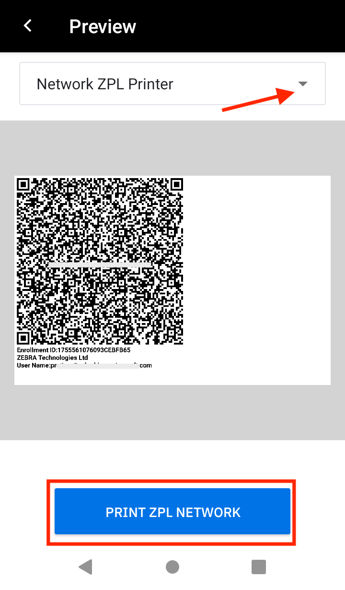
Bluetooth ZPL Printer:
Tap Printer ZPL Bluetooth to initiate printing. If the device and printer are not already paired, the user is prompted to pair them. Once paired, a confirmation message appears upon successful printing.
Share To: Shares the barcode as
shared_image.png. Tap Share To. 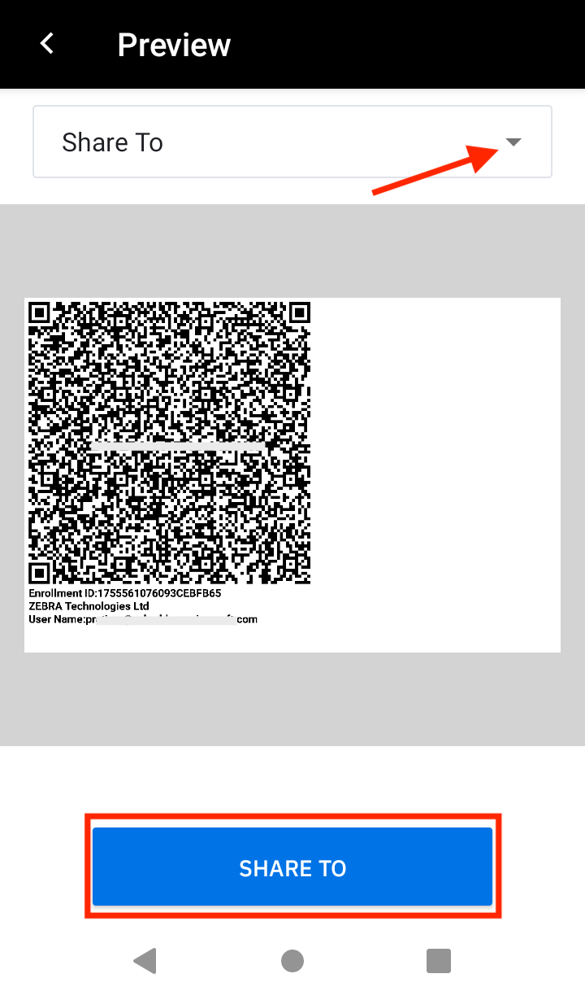Select one of the following options:
- Canon Printer: Tap the Canon Print app and follow the prompts. If the app is not visible, scroll to locate it. Ensure to follow the Canon Printer Calibration guideline.
- Other printers or devices:
- Print - Tap the option Save as PDF, enter a file name, and tap Save. The .PDF file is saved in the Downloads folder.
- Bluetooth - Shares files with another device (non-printer) via Bluetooth.
- Gmail - Ensure a Gmail account is added beforehand. Once added, select the Gmail account to open the compose email screen with the barcode attached as a .PNG file.
- NFC Tap & Pair: Ensure that NFC is enabled on both the device and printer. If connecting via Bluetooth, the printer and device must be paired. To use this feature:
- Tap the device near the printer's NFC tag.
- The NFC Tap & Pair screen appears and initiates the discovery process to locate nearby printers. Printers are discovered in the following order: Ethernet, WiFi, and Bluetooth. This process may take up to 30 seconds.
- Once the printer is found, the Preview screen displays, showing the appropriate connection method (e.g. Bluetooth ZPL Printer).
- Follow the instructions based on the connection method:
- Ethernet or WiFi: Follow the Network ZPL Printer instructions above.
- Bluetooth: Follow the Bluetooth ZPL Printer instructions above.
Example of NFC Tap & Pair with a Bluetooth printer
After Enrollment
Barcodes created during standard enrollment are saved in zCreator. To access them after the enrollment process is complete:
- Open the zCreator app.
- In the main screen, select the desired barcode file to open.
- The barcode appears in the Preview screen. Choose to print or share the barcode using the methods outlined in the During Enrollment section above.
| Select the barcode file to open in Preview. | ||
Guidelines and Behavior
This section provides guidelines and expected behaviors for printing and sharing barcodes:
Printer Calibration and Media:
- Network Connectivity: Ensure that the supported printer and the Zebra device are connected to the same network.
- Canon Printer Calibration: When printing with a Canon printer, the zCreator app sends the QR Code for printing. Proper calibration and adjustment of the Canon printer settings are essential to ensure the barcode is printed correctly. Failure to calibrate or configure the settings properly may result in issues such as unscannable or cropped QR Codes.
- Recommended Media: Use Zebra-supplied roll paper that matches your printer model (mobile, desktop, or tabletop). For example, mobile printers should use Zebra-provided mobile printer paper rolls for optimal results.
QR Code Printing:
- Optimal Printer Settings for QR Codes:
- Printing speed: Should not exceed 4.
- Darkness: Set between 10 and 15.
- Supported paper sizes: - 2-inch (5 cm) width paper: Allows QR Codes of 3 or 4 cm with accompanying text. - 3-inch (7.62 cm) width paper: Allows QR Codes of 3, 4, 5, and 6 cm with accompanying text.
- Preview Screen Character Limitations:
- When tapping the Print button in Identity Guardian during user enrollment, the Preview screen in zCreator displays the user name with a maximum length of characters.
- When opening a .PDF from the main screen of the zCreator app, the Preview screen limits the displayed user name to 35 characters, even if the actual user name exceeds this length.
- Preview Screen Barcode Alignment:
- During enrollment, barcodes displayed in the Preview screen are left-aligned when the Print button is tapped.
- When opening the barcode .PDF file from zCreator after enrollment, the barcode appears center-aligned in the Preview screen.
Barcode left-aligned. Barcode center-aligned.
- QR Code Size Variation for Zebra Printers: The actual size of the QR code may vary slightly from the specified dimensions, with a possible deviation of 0.1 cm.
- QR Codes Can be Scanned Directly from the Preview Screen: A QR Code displayed on a device can be scanned by another device straight from the Preview screen.
Connectivity and Technical Behavior:
- Bluetooth Pairing for Printing: If the mobile device is not paired with the printer during the first Bluetooth print request, users be prompted to pair with the device. The pairing request must be accepted to proceed.
Note: On some printer models, printing may not begin immediately after pairing. In such cases, users may need to re-initiate the print request. - Printing from Multiple Bluetooth Printers: Simultaneous printing from multiple devices is not supported over Bluetooth. If print jobs need to be performed via Bluetooth on multiple printers, Zebra recommends to introduce a delay of at least 30 seconds after the completion of the first device's print job before initiating the print job on the second device.
- NFC Tap & Pair:
- Workflow: During the NFC Tap & Pair process, the system prioritizes connection types in the following order:
- Ethernet Printer: The system first searches for an Ethernet printer.
- Wi-Fi Printer: If an Ethernet printer is not detected, it attempts to connect to a Wi-Fi printer.
- Bluetooth Printer: If both Ethernet and Wi-Fi connections fail, the system switches to Bluetooth. Even if certain settings, like access to printer configurations, are disabled by the administrator, printing can still proceed based on printer detection via NFC.
- Bluetooth Connection: When connecting to a Bluetooth printer using Tap & Pair, users may encounter a socket connection error. If this occurs, retry the Tap & Pair process. In most cases, it should succeed on the second attempt. If the problem persists, multiple retries may be necessary.
- Wi-Fi Connection: If the Wi-Fi connection fails, a connection error may occur. Ensure that both the printer and mobile device are on the same Wi-Fi network, then retry the Tap & Pair process to establish the connection.
NFC Card
With NFC cards, users can seamlessly write and access their Identity Guardian user profiles on Shared Devices, allowing the NFC card to be used as part of the authentication process.
During the enrollment process, the Identity Guardian zCreator companion app prompts users to write their profile data to the NFC card. Once the data is written successfully, the NFC card can be used for authentication.
To ensure successful authentication, the NFC card must comply with the NFC Card Specifications, be placed within 4 cm of the device, and held steady for approximately 4 to 5 seconds to complete the process.
Data Storage from Standard Enrollment
When NFC data is saved during the Standard Enrollment process on a Shared Device, the data is temporarily stored in the Identity Guardian zCreator companion app, which must be installed on the device. After enrollment, open the app to access the saved user data and write it to an NFC card within 24 hours. The NFC file is automatically deleted after this timeframe. The data is securely stored and accessible only to Identity Guardian, allowing users to authenticate effortlessly by tapping their NFC card on the device. Additionally, users can unlock their device with just a single tap of their NFC card.
Installing zCreator
Administrators must install the zCreator app on the devices. For guidance, see the Standard Enrollment or Self-Enrollment setup procedures.
NFC Card Specifications
- Supported NFC Card Types:
- Mifare
- DESFire EV3
- Salto
- Supported Format: Only NDEF format is supported. The application overwrites any existing data, if present, in the card.
- Memory Requirements:
- Without facial data: ~720 bytes
- With 1 facial capture: ~1232 bytes
- With 2 facial captures: ~1744 bytes
- With 3 facial captures: ~2256 bytes
- Operating Frequency: Cards should operate at 13.56 MHz, the standard frequency for NFC.
Admin Setup
Configure the following Managed Configurations:
- Enrollment Configuration:
- User Enrollment Configuration: NFC
- Authentication Configuration:
- Comparison Source: NFC
Write to NFC Card
If NFC data is saved during Standard Enrollment, it is temporarily stored in zCreator and must be written to an NFC card within the 24-hour storage period.
To write to an NFC card:
- Open zCreator.
- Tap to open the relevant NFC file that contains the user data.
- Tap and hold the NFC card against the device to write the data. Continue to hold the card in place until the writing process is complete.
- When successful, a confirmation message appears indicating that the data has been written successfully.
| Writing to an NFC card |
Sign In (Authentication)
After a user has been enrolled, the authentication screen is displayed on the device. This screen may also appear in response to specific Lock-screen Event options configured by the administrator. These events can occur in scenarios such as when a user signs out, locks the device, or reboots it.
To sign in or authenticate to a device, users can perform one of the following actions:
- Scan their user barcode.
- Tap their NFC card on the device.
- Tap Unlock on the screen.
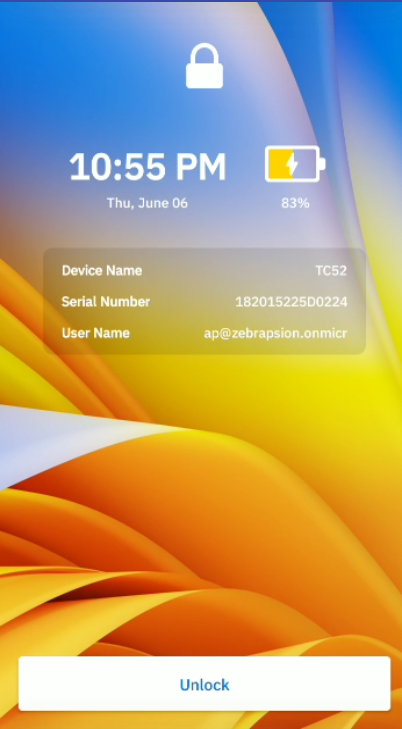
The device prompts the user to authenticate based on the Authentication Configuration set by the administrator. The authentication process follows these steps:
- Comparison Source: If applicable, the system first prompts the user to verify their identity using a comparison source, such as scanning their barcode or tapping their NFC card.
- Primary Authentication: After the comparison source is validated (if required), the system presents the user with the designated primary authentication method, such as entering a passcode or scanning their face.
- Secondary Authentication: If the primary authentication fails, the system prompts the user to complete the secondary authentication method.
- Fallback Authentication: If both the primary and secondary authentication methods fail (or if no secondary authentication is configured), the system presents the fallback authentication method.
For devices without a valid license, the system displays a passcode entry screen.
Note: A demo mode message will appear on the Identity Guardian lock screen if devices are not provisioned with the organization’s own encryption keys for user enrollment and authentication. This applies to shared device environments where the authentication scheme includes a barcode combined with facial biometrics or a user PIN/passcode.
Microsoft Authenticator
If Microsoft Authenticator app is in use, perform the following after the user unlocks the screen:
The Microsoft Authenticator app is launched prompting for user authentication. Enter the login credentials:

After authentication is successful, the user gains access to the device.
When a user launches any app that utilizes Microsoft Authenticator app as broker, the app automatically signs in without prompting for user name or password.
Prioritize Authentication Methods
Identity Guardian offers flexible user authentication methods triggered by various lock events, as configured by the administrator in the Lock-Screen Event Options under Authentication Configuration. When a shared device experiences multiple simultaneous lock events, Identity Guardian selects the most secure Verification Setup based on the highest score from its weighted scoring system. This ensures the highest level of security for shared devices, even during concurrent events. The relevant Lock-Screen Event Options include:
- On Unlock
- On AC Power Connected
- On AC Power Disconnection
Note: The priority logic does not apply to other lock screen events: On Reboot, On Device Manual Checkin (user logout), and On User Change. In these scenarios, Identity Guardian selects the specific Verification Setup configured by the administrator for that event to authenticate the user.
Weighted Scoring System
Identity Guardian uses a weighted scoring system to determine the optimal Verification Setup for simultaneous lock events on a shared device. Each authentication factor is assigned a specific weight:
| Authentication Factor | Weight (Score) |
|---|---|
| SSO | 4 |
| FACE | 3 |
| PASSCODE | 2 |
| NO_COMPARISON | 1 |
| NONE | 0 |
The total score for a Verification Setup is calculated by summing the scores of its primary and secondary authentication factors. The setup with the highest score is deemed the most secure and is selected for implementation. Fallback authentication methods do not contribute to the total score.
Example
Consider the following administrator configurations:
- Verification Setup 1:
- Primary Authentication Factor: FACE
- Secondary Authentication Factor: PASSCODE
- Fallback Authentication Method: ADMIN BYPASS PASSCODE
- Verification Setup 2:
- Primary Authentication Factor: FACE
- Secondary Authentication Factor: NONE
- Fallback Authentication Method: NONE
The scores for these setups are calculated as follows:
| Verification Setup | Primary Authentication Factor (Score) |
Secondary Authentication Factor (Score) |
Fallback Authentication (No Score) |
Total Score |
|---|---|---|---|---|
| Setup 1 | FACE (3) | PASSCODE (2) | ADMIN BYPASS PASSCODE | 5 |
| Setup 2 | FACE (3) | NONE (0) | NONE | 3 |
Scenario: If Verification Setup 1 is configured for an unlock event and Verification Setup 2 is configured for a power disconnection event, and both events occur sequentially (e.g., unlock followed by power disconnection) while the user is logged in with the device, Identity Guardian will prioritize Verification Setup 1. This decision due to Setup 1's higher total score (5) compared to Setup 2's score (3), demonstrating Identity Guardian’s approach to selecting the verification setup with the highest combined security weight.
Non-Identity Guardian Barcode
A user barcode, known as a Legacy Barcode, can be used to authenticate users even if it was not generated by Identity Guardian. This is useful in organizations where user barcodes already exist. These barcodes must be 1D and have a defined prefix. Upon scanning, the prefix is disregarded, and the user name serves as the identifier. When the device is locked, the user name is prominently displayed on the lock screen.
Note: Legacy Barcode is not encrypted and, therefore, not secure. For shared devices, Zebra recommends using encrypted barcodes for secure authentication. See Managed Configurations for more information.
Admin Setup
Configure Managed Configurations:
- Authentication Configuration - Expand User Verification Methods:
- Verification Setup
- Enable Comparison Source and select LEGACY BARCODE.
- Under Primary Authentication Method:
- Enable Primary Authentication Factor and set this to NO_COMPARISON.
- Enable Secondary Authentication Factor and set this to NONE.
- Enable Fallback Authentication Method and set this to NONE.
- Legcy Barcode Options:
- Enable Legacy Barcode Prefix and enter the prefix used to validate the barcode. The barcode must begin with this prefix, otherwise the user will not be authenticated. Without a prefix, the user will not be authenticated.
- Verification Setup
- Save the changes and deploy them to the devices.
Usage
- On the lock screen, tap the Scan to Unlock button.

- Scan the user barcode. The user gains access to the device. 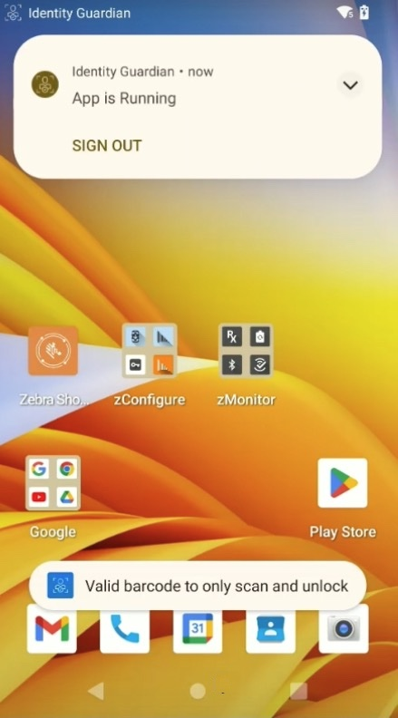
- Lock the device. The user name is displayed in the lock screen. 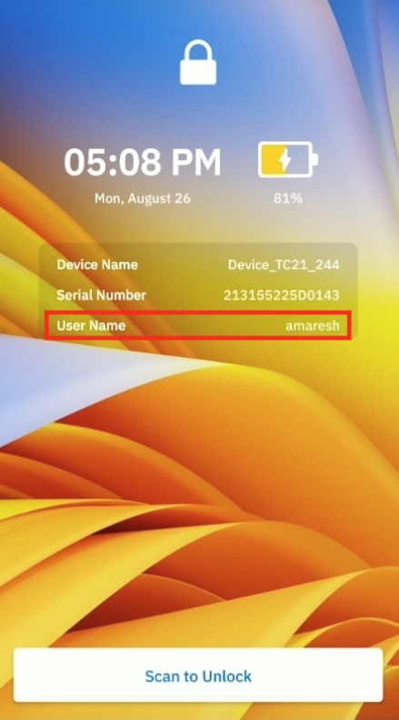
Admin Bypass
A user can bypass authentication by entering the Admin Bypass Passcode, useful for situations where authentication credentials are forgotten. Access is granted provided the user has received the bypass passcode from an admin. While this feature allows device access, it does not track user accountability. It offers a direct method to enter the passcode, as opposed to the alternative fallback authentication (part of the Authentication Configuration scheme), which requires multiple failed authentication attempts.
As a security measure, user login attempts are initially limited to five. A message appears indicating the remaining attempts. If all attempts are used, the user is advised to wait five minutes before trying again and the option is not accessible until the time elapses. Subsequent failed attempts or device reboots restrict the user to a single failed attempt before the device is locked again for five minutes. If the admin disables the Admin Bypass option, the login attempt counter resets to five for the initial login attempt.
| Message indicating the remaining number of failed attempts |
Message indicating the maximum number of allowed attempts is reached |
Admin Setup
Configure Managed Configurations:
- Lock Screen Configuration: Expand Lock-screen Menu.
- Enable Enable Admin Bypass Passcode on Lock screen and set it to true.
- Save the changes and deploy them to the devices.
Usage
- In the lock screen, tap the menu icon in the top right corner and select Admin Bypass.
- Enter the Admin Bypass Passcode provided by your administrator and tap Unlock.

- The user gains device access.
Alternate Sign-In
Alternate Sign-In, also known as Alternative Login, enables users of shared devices to log in as diffeerent users. This feature is useful for scenarios involving temporary users or those who do not have full-time access, ensuring user accountability is tracked.
Note: The user must be enrolled on the device before using the alternate sign-in method.
Admin Setup
Configure Managed Configurations:
- Authentication Configuration - Expand Lock-screen Event Options:
- On Unlock / OnReboot / On AC power connected / On AC power disconnected / On device manual checkin / On user change
- Enable Alternative Verification Setup and select the desired Verification Setup that specifies the authentication required for the alternate login.
- On Unlock / OnReboot / On AC power connected / On AC power disconnected / On device manual checkin / On user change
- Lock Screen Configuration - Expand Lock Screen Menu:
- Enable Customize Alternative Login Button and enter a name for the button designated for alternate login.
- Save the changes and deploy them to the devices.
Usage
- On the lock screen, tap the button with the customized text located above the Unlock button. The text on this button is based on the admin configuration.

- Scan the user barcode and perform facial authentication.
- The user gains device access.
Auto-Fill SSO Login
When users sign in with their SSO credentials, they can save them for future device logins, simplifying the process by requiring password entry only once. After successful primary authentication (e.g., facial scan or passcode), both the user name and password are automatically filled for subsequent logins. This applies to shared devices when multifactor authentication uses SSO as the secondary authentication method.
The SSO credentials are stored and managed in Guardian Safe. Even if Guardian Safe is disabled, users can still access these credentials, though only the SSO credentials are visible. Designated with the IG logo, these credentials are intended exclusively for use with Identity Guardian. Auto-filling of SSO login credentials occurs at the device level during authentication (managed by Identity Guardian) and when logging into Guardian Safe.
Important Notes:
- User Barcode - Must be generated with Identity Guardian v1.6 or later.
- SSO User ID - The SSO user ID is case-sensitive — the string entered during user enrollment must exactly match that from the identity provider. Discrepancies may lead to authentication issues or failure.
Admin Setup
Configure Managed Configurations:
- In Authentication Configuration, set:
- Primary Authentication Factor: FACE or PASSCODE
- Secondary Authentication Factor: SSO
- In Guardian Safe Configuration, set:
- Auto Fill for SSO: ENABLE
- Automatically Grant Accessibility Permission: ENABLE
- In SSO Authentication Configuration, configure the SSO settings as needed.
- Save the changes and deploy them to the devices.
Usage
- On the lock screen, scan the user barcode.
- Authenticate using the primary authentication method set by the administrator (e.g. enter passcode or perform a facial scan).
- The SSO login screen, as the secondary authentication method, appears with the user name field populated. Tap the password field.
- The user is prompted to save their credentials. Tap Yes to save credentials for future logins.
- Enter the user password and tap Save Credentials.
- The SSO login page reappears with the user name populated. Tap the password field to auto-fill the password, streamlining future logins.
Proxy Mode
Proxy mode enables third-party apps to function as screen blocking apps instead of Identity Guardian. It allows these apps to send user sign-in and sign-out events to Identity Guardian, which can then be shared with other Zebra apps like Device Tracker. This mode is designed for organizations using their own screen blocking apps for device access, while having the ability to notify Identity Guardian of these events. As a result, these notifications are automatically relayed to other Zebra apps, such as Device Tracker, to track user accountability.
Requirements:
- Install the Zebra app that receives user session information, such as Device Tracker.
- Revise the custom screen blocking app using Current Session API. Set signed_in_state to true when users sign in and false when they sign out. Parse the result for user session details.
- Configure Managed Configurations:
- In Usage Mode, set Application Mode to Proxy.
- Save the changes and deploy them to the devices.
Usage
When a user logs into the custom blocking screen app, Identity Guardian receives the sign-in event and transmits the information to the other Zebra app, which takes action accordingly. E.g., in Device Tracker, the user appears in the Checked Out field.
When a user logs out, Identity Guardian receives the sign-out event and transmits this information to the other Zebra app, which takes action accordingly. E.g., in Device Tracker the user name is cleared from the Checked Out field.
Note: If the user attempts to open Identity Guardian, a message appears indicating that it is not intended to be launched in its current configuration.
User Authentication Scenarios
This video demonstrates various scenarios of user device authentication. In this example, one group of authentication settings is applied to a shared device with the following configurations:
- Comparison source: Barcode
- Primary authentication: SSO
- Secondary authentication: Passcode
- Fallback authentication: Admin bypass passcode
Sign Out
Sign Out only applies to shared devices. To sign out a device, perform one of the following:
- Open Identity Guardian app (Zebra Biometric) and tap Sign out.

- Swipe down to open the notification drawer. From the Identity Guardian notification, tap Sign Out.
- Lock the device.
- Restart the device (if configured by the administrator).
After a device is signed out, the lock screen is visible:
Global Sign-Out
Global Sign-Out enables any applications using Microsoft Entra ID Single Sign-On (SSO) on devices in shared mode to perform a universal logout across all supported apps. This feature clears previously signed-in accounts and displays the Identity Guardian lock screen. For example, if Microsoft Teams is installed, a user who logs into to the device with their Microsoft Entra ID credentials is automatically signed into the Teams app. With Global Sign-Out enabled, signing out from either Teams or Identity Guardian triggers the removal of user data and presents the Identity Guardian lock screen for the next user login.
Admin Setup
Prerequisites:
- Microsoft Entra ID is integrated with Identity Guardian as the SSO provider.
- The Microsoft Authenticator app is configured in Shared Device Mode.
- The Identity Guardian app is installed with SSO Authentication Configuration, presenting the Identity Guardian lock screen where users must enter their Microsoft Entra ID credentials to login.
To Configure "Global Sign-Out in Shared Mode":
- In Identity Guardian's Managed Configurations, select SSO Authentication Configuration.
- Enable Global Sign-Out in shared mode.
Usage
- Sign out of the device or sign out from any app with Microsoft Entra ID SSO.
- All user data is removed and the Identity Guardian lock screen is displayed for the next user login.
Clear Application Data
The Clear Application Data feature allows for the removal of application storage data, enabling business applications to reset to their default state and ensuring that subsequent users cannot access the previous user’s information. This feature is particularly useful when users log out or switch accounts. The reset is performed based on the application’s package name.
Important Note: The package name for Identity Guardian (com.zebra.mdna.els) cannot be added as an app for this feature. This restriction is in place to ensure that Identity Guardian operates without unintended disruptions.
Admin Setup
Steps to Configure "Clear Application Data" in Identity Guardian Managed Configurations:
Configure App:
- In Identity Guardian's Managed Configurations, select Authentication Configuration.
- Locate the Logout Behavior section.
- Enable the Clear Application Data option.
Add Application Details:
- Click the Add Application Details button to display the field for entering the package name.
- Enter the application's package name. For example, to add Google Chrome, enter:
com.android.chrome. - To add more apps, click Add Application Details and repeat this process as needed.
- Use the Clear or Delete buttons to modify or remove any entries.
Save and Apply:
- Complete the remaining steps in the process, then save and apply the changes. This clears the specified application data whenever a user logs out or switches accounts.
Usage
- Sign out the device.
- The application specified is restored to its default state, deleting all user data and settings.
Lock Device
This section discusses features designed to enhance user experience and security on the device lock screen.
Custom Message
A user can create a custom message to display on the lock screen, which can be useful in various scenarios. For shared device users, it allows them to leave instructions for the next user. For personally assigned device users, it can serve as a device identifier or a personal reminder. This custom message remains visible to all users when they sign in or sign out of the device.
Admin Setup
Configure Managed Configurations:
- Lock Screen Configuration - Expand Custom Lock Screen Message:
- Enable Allow Custom Lock Screen Message and set it to true.
- Enable Custom Lock Screen Message Source and select App Specific.
- Save the changes.
Usage
To create or edit a custom message on the lock screen:
- Sign in to the device to gain device access.

- Open Identity Guardian from the apps menu.

- From the top right, tap on the message icon to access the message settings.

- Enter the message to display on the lock screen, then tap Save.

- Lock the device. The custom message is now displayed on the lock screen.

Auto-Unlock
Auto-Unlock seemlessly unlocks the device using facial authentication, eliminating need to tap a button on the lock screen. With this feature enabled, users are immediately prompted to scan their face for authentication when unlocking the device, bypssing the extra step.
Requirements:
- Face must be configured for primary authentication.
- For shared devices, Authentication Data Storage must be enabled (not required for personally assigned devices).
Admin Setup
Configure Managed Configurations:
- Lock Screen Configuration - Expand User Verification Methods:
- Verification Setup1:
- Enable Comparison Source and select BARCODE.
- Expand Primary Authentication Method. Enable Primary Authentication Factor and select FACE.
- Verification Setup1:
- Lock Screen Configuration - Expand Auto Unlock:
- Enable On Unlock and select true.
- Save the changes.
Usage
- On the lock screen, tap the unlock button:
- For shared devices: Scan to Unlock
- For personally assigned devices: Unlock

- Scan the user barcode and then scan the user's face for facial authentication. The barcode scan is needed for first-time authentication.
- The user gains access to the device.
Subsequent Unlock Attempts: When unlocking the device (e.g. pressing the power button or swiping to unlock), the user is immediately prompted to scan their face for authentication, bypassing the need to tap the unlock button.
Microsoft SSO Session Persistence
The SSO Session Persistence feature allows user sessions to be retained for those logging in with Microsoft as their identity provider (using Microsoft authenticator as the broker app). This means that after locking the device, users can unlock it and log in by simply entering their password, since their user name is retained.
Requirements:
- Authentication Configuration: Verification Setup must be configured only with SSO as the primary authentication factor, with no secondary or fallback methods.
- Lock Screen Events: All Lock Screen Events (both main and alternative) should use the Verification Setup that is configured solely with SSO, as specified in the previous requirement.
Admin Setup
To enable Microsoft SSO Session Persistence, configure the following Managed Configurations:
- Usage Mode:
- Enable Application Mode and set it to Authentication.
- Authentication Configuration - Expand User Verification Methods. For Verification Setup:
- Enable Primary Authentication Factor and set it to SSO.
- Enable Secondary Authentication Factor and set it to NONE.
- Enable Fallback Authentication Method and set it to NONE.
- SSO Authentication Configuration:
- Enable Single Sign On Provider and set it to Microsoft.
- Enable SSO Session Persistence and set it to true.
- Enable Lock-screen Event Options. Select the desired options, ensuring the Verification Setup solely includes SSO for both main and alternative setups, as stated in the Requirements section. NOTE: The On Reboot option does not apply to SSO Session Persistence. After a device reboot, the lock screen appears based on the selected Verification Setup.
- Save and deploy the changes.
IMPORTANT: When a deployment with the SSO Session Persistence value set to true is processed by the EMM system to the device, Identity Guardian reviews the Verification Setups configured for Lock Screen Events. If any of these setups incorporate non-SSO factors, a warning message is sent to the EMM system, indicating that SSO persistence is supported only for configurations that use SSO exclusively.
Usage
This section discusses how to use the Microsoft SSO Session Persistence feature.
When a lock event occurs after logging into Microsoft SSO, the “Switch User†and “Unlock†buttons appear on the screen. Proceed with one of the following actions:
- Tap Unlock - The user is prompted to enter their password, with the username automatically populated from the existing Microsoft user session.
- Tap Switch User - The user is redirected to the lock screen according to the associated Verification Setup. Any interaction with the buttons on the lock screen will terminate the current SSO session.
- Tap Enroll User from the Lock Screen menu - When this option is selected, Identity Guardian checks for an active Microsoft session. If detected, the session is terminated, and the “On user change†lock screen event is triggered, applying the associated Verification Setup. A new SSO login screen then appears. Upon login, the self-enrollment process begins.
Note: If the user presses the back button during or after self-enrollment, the "On User Change" lock screen event remains active with its associated Verification Setup.
Guardian Safe
Guardian Safe enhances productivity and security on shared devices by securely storing user credentials after a single entry on any application's login screen. It automatically populates these credentials for future logins, streamlining access for both native and web applications, such as Microsoft Edge and Google Chrome. Users can easily save credentials from any login screen and have the option to mark specific apps as “ignored†to prevent credential storage. They can also view, modify, or delete saved credentials, providing flexibility and control over their login information.
Guardian Safe is compatible with both SSO and non-SSO environments. When enabled, any app with a login screen prompts users to save credentials if they have not been saved yet. To manage their credentials within Guardian Safe, users must enter their multifactor authentication as configured by the administrator. If Auto-Fill SSO is enabled, the SSO credentials are automatically populated when accessing Guardian Safe.
Important Notes:
- Auto-Fill SSO - When Auto-Fill SSO is enabled and Guardian Safe is disabled, only SSO login credentials are visible in Guardian Safe. These are identified by the IG logo and are used solely for authentication with Identity Guardian.
- Lost Barcodes: If an Identity Guardian user loses their barcode, the stored information in Guardian Safe cannot be accessed with a newly created enrollment barcode. Consequently, new credentials (user name and password) must be saved again for all applications.
- Supported Authentication Values: Only applications with user ID and password fields are supported. Applications requiring OTP (one-time password) fields are not supported. Acceptable values for the user ID can vary by application and may include values such as an email address, phone number or user name.
- App Challenges: Certain apps may experience difficulties when saving or entering credentials in Guardian Safe. If you encounter such issues, please contact Zebra technical support for assistance.
- User Re-Enrollment: When a user re-enrolls with the same user ID, Identity Guardian does not recognize previously saved credentials. As a result, users are prompted to save their credentials for applications they have already used. To resolve this, users must re-enter and save their credentials again.
Requirements:
- Internet access
- Identity Guardian license
Prerequisites:
- ZDNA Cloud Registration - Register with Zebra.com based on the instructions provided in ZDNA Cloud Setup.
- Device Enrollment - Ensure the device is enrolled and connected to Zebra DNA Cloud.
- User Barcode - The user barcode must be generated with Identity Guardian v1.6 or later.
- Set Authentication Scheme - The administrator must create an authentication scheme that includes a barcode in combination with either facial biometrics or a user PIN/passcode. Additionally, the user enrollment barcode that includes Guardian Safe MUST be regenerated.
- Enable Temporary Data Storage - Enable this option in Authentication Configuration from Managed Configurations.
Enable Guardian Safe
Guardian Safe is enabled through ZDNA Cloud and the Guardian Safe Configuration in Managed Configurations. Once enabled, Accessibility Service permission must be granted to allow user credentials to be automatically populated.
To enable Guardian Safe:
- Login to Zebra DNA Cloud.
- Click the user icon at the top right corner and select My Services from the menu.

- Toggle to enable Guardian Safe. 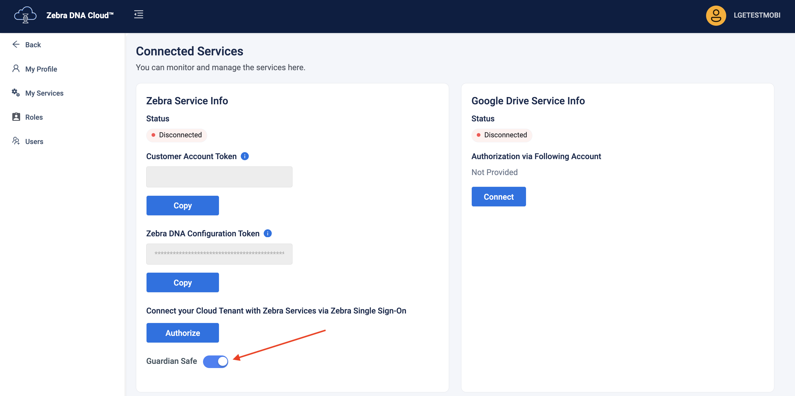
- When creating the Managed Configurations profile, under Guardian Safe Configuration enable Guardian Safe and configure the other available options as needed.
Choose one of the following methods to grant Accessibility Service permission:
Automatically Grant Accessibility Permission - The administrator can enable the Automatically Grant Accessibilty Permission option in Guardian Safe Configuration under Managed Configurations. Once this option is enabled, the Guardian Safe Settings screen will display Use Accessibility: On/Off as grayed out, making it non-changeable by the user and no user interaction is required.
Manually Grant Accessibility Permission - User intervention is required to accept the required permission. The user should follow these steps:
- Open Identity Guardian.
- Tap the menu icon in the top right corner and select Guardian Safe.

- Choose one of the following actions based on the administrator's configurations:
- Scan the user barcode, and then perform the designated authentication methods.
- Tap the NFC card on the device, and then perform the designated authentication methods.
- Tap the menu icon in the top right corner and select Settings.
- Grant the Android Accessibility Service permission for Identity Guardian:
- Toggle to enable Use Accessibility: On/Off.
- When the Accessibility Service Disclosure statement appears, tap Accept.

- In the Accessibility screen, tap Identity Guardian.

- Enable Use Identity Guardian.

- Tap Allow.
- Tap Back continuously until Guardian Safe is closed.
- Open Identity Guardian.
Save Credentials
To save user app login credentials:
- Open an app with a login screen (containing a user ID and password field)
- Tap the password field.

- A prompt appears asking if the user would like to save their credentials. Tap Yes.
- If No is selected, the user credentials are not saved (requiring the user to manually enter their credentials each time they log in to the app), and the app is added to the Ignored Apps list.

- If No is selected, the user credentials are not saved (requiring the user to manually enter their credentials each time they log in to the app), and the app is added to the Ignored Apps list.
- The Guardian Safe input screen appears. Enter the user credentials and tap Save Credentials.

- The user login credentials are now saved and will automatically populate in future login attempts when tapping the user name or password field.
Auto-Populate Credentials
After an application's login credentials are saved, subsequent login attempts will automatically populate the credentials in the login screen.
Delay in Auto-Populating Credentials After Reboot: After a device reboot, users may encounter a delay in the automatic population of their credentials during the first login attempt.
- Open an app where the login credentials have previously been saved.
- Tap the user name or password field on the login screen. The user is prompted to authenticate via facial biometric scan or passcode entry.
- Upon successful authentication, the login credentials are automatically populated in the respective fields.
- Tap the sign-in button to access the app.
View Apps
To view apps with login credentials saved in Guardian Safe:
- Open Identity Guardian.
- Tap the menu icon in the top right corner and select Guardian Safe.
- Choose one of the following actions based on the administrator's configurations:
- Scan the user barcode, and then perform the designated authentication methods.
- Tap the NFC card on the device, and then perform the designated authentication methods.
- In the Saved Credentials tab, a list of apps with saved passwords is displayed with their corresponding logo. Tap the eye icon to reveal the password. If Auto-Fill SSO is enabled, the SSO login is saved with the IG logo, indicating that they are SSO credentials meant solely for use with Identity Guardian.
| Saved app credentials | Saved SSO credentials |
Ignored Apps
Prevent Guardian Safe from saving login credentials from specific apps by designating them as Ignored Apps:
- Open an app in the login screen.
- When prompted to save the user credentials during login, tap No.
- The user is directed back to the login screen and the login credentials are not saved. The app is listed in the Ignored Apps tab with the toggle button disabled.
Future login attempts in this app will no longer trigger Guardian Safe to offer saving the login credentials and the Guardian Safe floating quick access button is no longer present.
To view all Ignored Apps:
- Open Identity Guardian.
- Tap the menu icon in the top right corner and select Guardian Safe.
- Choose one of the following actions based on the administrator's configurations:
- Scan the user barcode, and then perform the designated authentication methods.
- Tap the NFC card on the device, and then perform the designated authentication methods.
- Tap the Ignored Apps tab. A list of ignored apps is displayed. 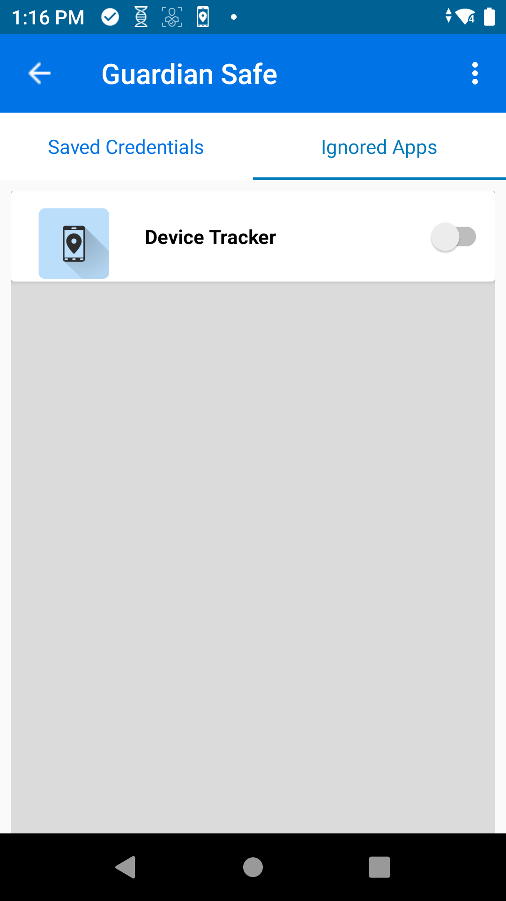
To save credentials from an Ignored App:
- Open Identity Guardian.
- Tap the menu icon in the top right corner and select Guardian Safe.
- Choose one of the following actions based on the administrator's configurations:
- Scan the user barcode, and then perform the designated authentication methods.
- Tap the NFC card on the device, and then perform the designated authentication methods.
- Tap the Ignored Apps tab. A list of ignored apps is displayed.
- Tap on the app to save credentials and tap Yes in the confirmation message.
- The app is removed from the Ignored Apps tab. The user is prompted to save credentials the next time the app is opened.
Edit Credentials
There are two methods to modify an app's login credentials saved within Guardian Safe:
- Using Guardian Safe's floating quick access button on the app's login screen
- Through Guardian Safe directly with Identity Guardian
Floating Quick Access Button: To edit the login credentials for an app using the Guardian Safe floating quick access button:
- In the app's login screen, tap on the Guardian Safe floating quick access icon.

- Guardian Safe appears, allowing for the user name or password to be changed. Make the desired changes and tap Save Credentials.
- The updated credentials are now saved.
- Future login attempts in the app will automatically be populated with the updated login credentials.
Guardian Safe: To edit the login credentials for an app through Guardian Safe:
- Open Identity Guardian.
- Tap the menu icon in the top right corner and select Guardian Safe.
- Choose one of the following actions based on the administrator's configurations:
- Scan the user barcode, and then perform the designated authentication methods.
- Tap the NFC card on the device, and then perform the designated authentication methods.
- In the Saved Credentials tab, find the app to modify. Tap its hamburger menu on the right and select Edit.

- Edit the user name and/or password.
- Tap Save Credentials.
- Future login attempts in the app will automatically be populated with the updated login credentials.
Delete Credentials
To delete app login credentials saved in Guardian Safe:
- Open Identity Guardian.
- Tap the menu icon in the top right corner and select Guardian Safe.
- Choose one of the following actions based on the administrator's configurations:
- Scan the user barcode, and then perform the designated authentication methods.
- Tap the NFC card on the device, and then perform the designated authentication methods.
- The apps with passwords saved are listed. In the Saved Credentials tab, find the app to modify the credentials. Tap its hamburger menu on the right and select Delete.

- Tap Yes in the confirmation message.

- The app is removed from the list. 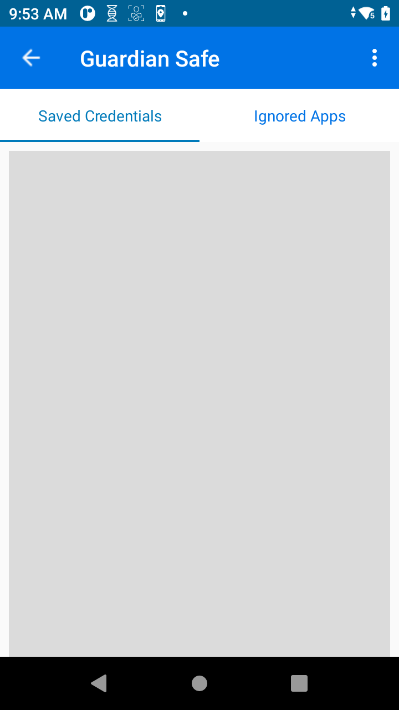
Delete Users
Users can be removed from the Device Users section in ZDNA Cloud. When a user is deleted, all saved application credentials and the user enrollment barcode are removed. To regain access, The barcode must be regenerated for the same user.
Device Alarm
The Device Alarm is an audible alert activated when a user is not logged into the device or it is not returned to the powered cradle within the specified timeout period. These conditions can be configured and managed by the administrator via Managed Configurations. This feature is designed to prevent devices from remaining idle in unauthorized locations and to ensure they are returned to their cradle after use.
Admin Setup
Configure Managed Configurations:
- Lock Screen Configuration:
- Under Audio Configuration, toggle to activate Alarm for Login Timeout and select ENABLE.
- Enter the Alarm Timeout duration in seconds. Accepted range: 60 to 600.
- Save the changes.
Usage
The alarm is activated when a device is removed from its cradle and the user does not log in before the specified countdown ends, or when a user logs out and does not return the device to a powered cradle or log back in within the specified timeout period. The alarm sounds continuously until it is deactivated. This applies even a voice call is accepted while a user is not signed in - the alarm will continue to ring.
Once activated, the alarm continually plays and only deactivates when a user logs into the device or places the device back on the powered cradle.
If a user logs in and locks the device without logging out, the alarm will not be activated.
Note: The alarm will not activate if the device is in Doze mode due to restrictions in this mode.
| Alarm countdown triggered | Notification of alarm countdown | Alarm activated | Notification of alarm activated |
External Display
Identity Guardian can detect when a device is connected to a Workstation Connect (WSC) dock with an external display, allowing it to block automatic check-ins while the device remains functional with an external display. This ensures uninterrupted and seamless operation.
Admin Setup
Configure the following Managed Configurations:
- Lock Screen Configuration: Under External Display Support:
- Prevent Logout: Enable
- Maximum Delay Time: [Specify the delay duration (in seconds) for the notification message, allowing adequate time for the external display to be detected. Range: 5 to 10 seconds.]
Usage
The following steps explain the system's behavior based on the external display configuration, dock type, and connection to an external display:
Dock the Device: Place the device on either an AC dock or a Workstation Connect (WSC) dock, with or without an external display.
Identity Guardian Evaluation: Identity Guardian assesses the configuration to determine the appropriate action:
- If "Prevent Logout" is enabled: A delay timer, configurable between 5–10 seconds, is initiated. During this delay, a notification message is displayed to inform the user: “Workstation Connect dock and external display is being detected.†The system polls the HDMI status every second during this delay:
- If HDMI is detected: Automatic check-in is blocked.
- If HDMI is not detected: Automatic check-in proceeds after the delay period.
- If "Prevent Logout" is disabled: Check-in proceeds immediately, irrespective of the dock type or HDMI status.
 Message displayed during the delay
Message displayed during the delay- If "Prevent Logout" is enabled: A delay timer, configurable between 5–10 seconds, is initiated. During this delay, a notification message is displayed to inform the user: “Workstation Connect dock and external display is being detected.†The system polls the HDMI status every second during this delay:
ZDNA Cloud
With the Zebra DNA Cloud platform, Identity Guardian provides administrators with visibility into user activities. This includes the ability to track who has signed in and out of devices, the security measures in place, usage times, and more. Additionally, administrators have the ability to expire users, reset PIN passcodes, and override screen locks.

For more information, see the ZDNA Cloud documentation.
Device Orientation
This section provides device orientation guidelines for both mobile and tablet devices.
Mobile Devices
On mobile devices, only portrait mode is supported. If auto-rotation is enabled, facial biometrics is not supported in landscape mode.
Tablet/Kiosk Devices
On tablet/kiosk devices, both portrait and landscape modes are supported with auto-rotation. However, facial biometrics is not supported in landscape mode.
Notification Behavior
Identity Guardian notifications differ significantly between Android versions prior to 14 and versions 14 and above, due to changes in the Android platform.
Android Versions Prior to 14
In Android versions prior to 14, users cannot dismiss notifications triggered by the Identity Guardian app.
Android Versions 14 and Higher
Android 14 introduces updates to notification behavior, enabling users to manually dismiss Identity Guardian notifications from the device's notification drawer.
- Users can swipe to remove Identity Guardian notifications from the Android notification drawer.
- Users can dismiss both foreground and background notifications.